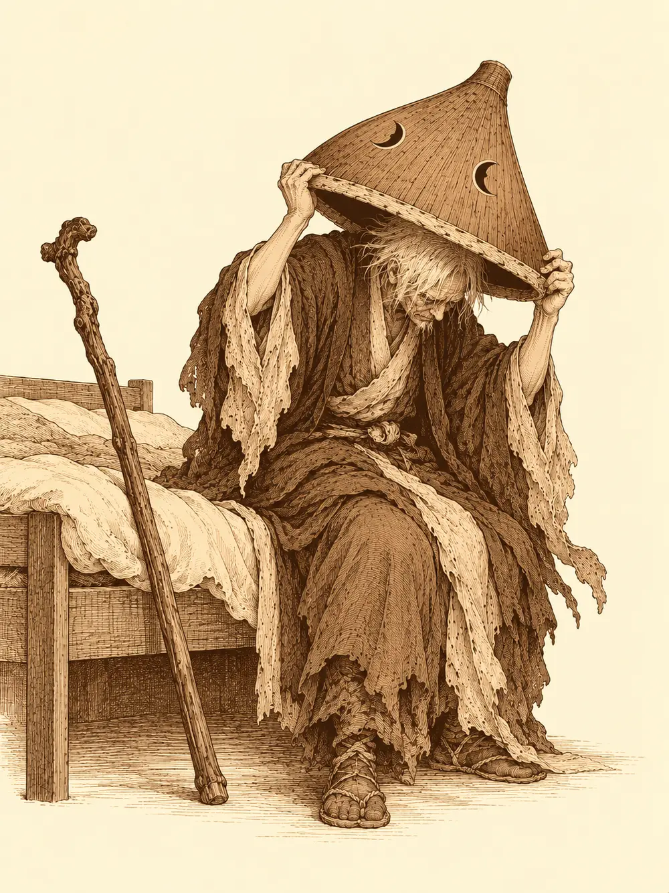

Capítulo 9
La venganza de los sacerdotes
Libro I · Los cazadores de Ukio
El sótano de los ritualistas estaba en obras. Aquel agujero bajo la casa de la estufa iba a ser, cuando terminaran, un lugar para los cazadores, y nadie sabía todavía cómo quedaría. Mientras tanto, en la taberna, Peluso daba vueltas por las paredes recogiendo polvo y soltándolo, y el suelo estaba más sucio que antes de que llegara.
Shiro salió de la cocina con una bandeja de sake y una disculpa en la boca, porque llegaba tarde. Alguien le comentó que en la aldea de los cien años había quedado libre una taberna, por si quería probar suerte con un negocio propio.
"Yo estoy en deuda con el señor Kitaro", contestó el antiguo ronin, muy serio, y volvió corriendo a la cocina.
Alguien le tiró un pescado al nekomata, que dormía sobre la chimenea. Una zarpa salió de la nada, lo atrapó y el gato siguió durmiendo.
Después de comer, cada uno se fue a lo suyo. Unos a la tienda de la anciana de los farolillos rojos, a ver qué les devolvía la esfera; otros al alquimista. Hayate echó a andar sin rumbo por el pueblo y acabó delante del pequeño templo, que seguía cerrado, con un madero atravesado en la puerta y el mismo cartel de siempre. Una mujer mayor golpeaba la madera con los nudillos.
"¡Maldita sea! Todavía no ha vuelto ese maldito sacerdote".
El arquero le preguntó si podía ayudarla. La mujer le contó que el sacerdote se había ido hacía meses al monte Sudo, en el bosque, para hacer su peregrinaje y recoger lo necesario para las bendiciones. No se tardaba tanto en subir a una montaña y bajar. No había vuelto. Ella necesitaba sus bendiciones, y los dioses no iban a esperar a que a aquel hombre le diera la gana de regresar.
"Se habrá perdido con las geishas y esos burdeles que hay ahora por aquí".
Se marchó refunfuñando. Hayate miró el cartel. La pintura estaba desvaída, la madera gris. Nadie había entrado allí en mucho tiempo.
Rodeó el templo. Las ventanas estaban tapadas con cortinas por dentro, pero en un lateral, lejos de la calle principal, había una cristalera. Con el bullicio del mercado, nadie oyó el crujido cuando Hayate la rompió y saltó al interior. Había un altar pequeño, una figura de león detrás, y sobre el altar libros con oraciones y leyendas del pueblo. Ningún diario. Ninguna nota que dijera adónde iba ni cuándo pensaba volver.
Decidieron subir al monte. Entraron en el bosque de Jigoku por el norte, con la niebla de siempre pegada a los tobillos, y al cabo de un rato tropezaron con los restos de alguien que había tenido peor suerte: una mochila abierta, papeles tirados, una espada partida, una sandalia y un paraguas abierto en el suelo.
Mientras rebuscaban en la mochila, el paraguas se movió. Se cerró de golpe, el mango se convirtió en una pierna y la cosa se puso en pie delante de ellos, riéndose. Uno de los cazadores recordó al paraguas que habían soltado del sótano, pero este tenía un dibujo distinto en la tela, y ninguna intención de hacer amigos. Se abrió de golpe y soltó una ventolera contra Tarutaru, que aguantó en su sitio, y la sandalia saltó hacia ella como un zapatillazo de madre.
Jin desenvainó su espada envuelta en fuego y partió la sandalia en el aire. Hayate se elevó un poco y le metió dos flechas al paraguas, que se quedó tirado en el suelo, cerrado, quieto como un paraguas cualquiera. En la mochila había diez monedas para cada uno.
Siguieron. Pasaron no muy lejos del claro de los tanuki, y desde allí, entre los árboles rojos, les llegaron risas, voces, ruido de fiesta. El baku había dicho que dormirían hasta que hubieran pagado. Por lo visto, algunos ya habían pagado. Cruzaron el puente de madera podrida del encargo del ronin, y un par de horas después vieron entre las ramas una montaña alta y escarpada con una casita en la cima, tan pequeña desde abajo que apenas se distinguía.
La araña de Tarutaru subió por la ladera. Volvió con noticias: había un camino que bordeaba la montaña, y en el camino, monjes con guadañas.
No sabían si eran buenos o malos. Decidieron averiguarlo por las buenas y subieron por el sendero hasta una puerta de madera, un arco de dos postes en lo alto de la primera cuesta. Detrás había dos guardianes con túnicas de monje que al verlos agarraron las armas.
"¿Quién va? ¿Qué hacéis aquí?".
"Venimos a buscar al sacerdote del pueblo. Lo último que sabemos es que vino aquí".
Los monjes se miraron.
"¿Os mandan los del pueblo?".
"El pueblo echa mucho de menos a su guía espiritual".
Volvieron a mirarse. Uno de ellos entrecerró los ojos.
"Ah. Vosotros sois los cazadores".
"Cazamos cosas, sí".
"Pues queremos vuestras vidas".
Levantaron el brazo y a su alrededor se encendió un resplandor tenue, una protección de luz. Hayate disparó primero, y la flecha llevaba algo más que punta: al clavarse brotaron de ella unas lianas espinosas que se enroscaron en el monje y lo dejaron atado al suelo. El otro levantó la mano hacia Hino Yama, y el mago se quedó rígido de golpe, sin poder mover un músculo, con los ojos muy abiertos, mientras el monje se le acercaba con la guadaña. Tardó en soltarse. Cuando lo hizo, Tarutaru y Jin ya estaban encima de los dos guardianes. No duraron mucho. Al registrarlos sacaron dos monedas por cabeza, que era lo que cabía esperar de unos monjes.
La araña siguió subiendo. Cerca de la cima había una construcción pequeña y abierta, un refugio de peregrinos con una cama, cuencos, hierbas secas. Junto a él, atado, un hombre con ropas de sacerdote. Y a su alrededor, más monjes. Uno de ellos subía corriendo por el sendero para avisar a los demás de la pelea en la puerta.
No hubo emboscada que valiera. El primer guardián que bajó a mirar los descubrió, y Hayate le disparó con el yumi del gato: la flecha se clavó en la pierna y el hombre empezó a moverse como si caminara por el barro. Gritó para avisar a los suyos, se curó con un murmullo y lanzó contra Tarutaru una saeta de luz que le quemó el hombro. Hino Yama cubrió el sendero de telarañas para frenarlo.

Entonces aparecieron los demás, arriba, en el borde de un saliente, a cincuenta pies por encima de ellos. Desde allí lo veían todo. Los cazadores, pegados a la ladera, apenas los veían a ellos.
El monje herido se soltó de la telaraña y levantó la mano hacia Jin. Al guerrero se le apagó el mundo. Se quedó ciego en mitad del camino, con la espada en la mano, oyendo pasos sin saber de dónde venían. Se movió hacia donde había sonado la voz, se colocó como pudo y soltó una onda de trueno a ciegas. Se oyó un grito, un golpe, un crujido, y después nada. El monje había caído por el barranco y no se levantó. Al rato, Jin empezó a distinguir sombras otra vez, y luego formas.
"Voy a por ti", le dijo al saliente, aunque no veía a nadie todavía.
Arriba, uno de los monjes se bendijo a sí mismo y a su compañero, y en mitad del sendero apareció un arma de luz flotando, sin nadie que la sostuviera, que se movía sola. Tarutaru alzó las manos y una bola de oscuridad cubrió por completo el saliente; los monjes de arriba dejaron de ver el camino. Corrieron. Uno de los de arriba intentó paralizar a Hayate, que aleteaba por la ladera, y el arquero sintió el tirón en los músculos y se lo sacudió como quien se sacude agua; si se hubiera quedado rígido en el aire, se habría estrellado. Llegó al borde, agarró a un guardián y lo empujó al vacío. El hombre cayó cincuenta pies y se levantó, roto pero vivo.
La pelea se repartió por toda la montaña, en tres o cuatro alturas distintas. Jin quedó en un recodo con dos monjes encima y aguantó con un escudo de luz que se le encendía en el antebrazo cada vez que un golpe iba a alcanzarlo. Hino Yama tenía un hilo de rayo tendido hasta el monje caído y lo mantenía allí, crepitando, mientras con la otra mano lanzaba fuego a los que bajaban. Tarutaru había untado su espada con un veneno oscuro, y el primero al que alcanzó empezó a temblar y a fallar los golpes. Hayate conjuró una ráfaga de viento para apartar al suyo del borde.
Los monjes se curaban entre ellos, se bendecían, volvían a levantarse. Pero cedían. Tarutaru tumbó a uno. Hayate, a otro. Un tercero miró a su alrededor, vio que se quedaba solo, alzó la mano hacia Jin para dejarlo clavado en el sitio y echó a correr. El hechizo no prendió. Jin lo alcanzó por la espalda antes de que diera diez pasos, y el hombre cayó con la túnica ardiendo.
Quedaba uno. Se había refugiado arriba del todo, junto a un árbol solitario en la cima, cerca del refugio donde estaba atado el sacerdote. Lanzó contra Hayate un rayo de luz que pasó de largo. El arquero le respondió con el yumi: la primera flecha lo volvió lento, la segunda le soltó a los pies unas lianas espinosas que lo dejaron clavado al suelo.
Jin llegó hasta él con la espada en alto.
"¿Te vas a rendir o te tengo que cortar la cabeza?".
El monje no contestó. Seguía forcejeando con las lianas, tirando, intentando golpear con lo que tuviera a mano, con las uñas si hacía falta. Jin le cortó la cabeza.
Desataron al sacerdote. Era un hombre mayor, con la espalda encorvada, que en cuanto tuvo las manos libres recogió su vara y un sombrero enorme que estaba tirado junto a la cama, y se lo encasquetó.
"Muchas gracias. Muchas gracias. Llevo aquí más de un mes atado". Se frotó las muñecas. "Estos malditos se querían vengar de mí. Decían que yo les había quitado el sacerdocio de Ukio, o no sé qué historias contaban".
Los miró de arriba abajo.
"Vosotros tenéis pinta de cazadores. Antes de irme pedí que vinieran unos al pueblo, ¿sois vosotros?".
Le dijeron que lo eran, y que había una mujer en Ukio que no paraba de preguntar por él.
"Ah, la señora Herminia. Viene cada semana a rezar". Suspiró. "Vamos, pues. Algo tendré en el templo para recompensaros".
Registraron a los muertos y se llevaron cinco monedas cada uno. En el refugio no había nada de valor, solo una taza con agua, hierbas, cosas de peregrino.
Bajaron por el bosque de Jigoku. Entre los árboles, en la niebla, vieron más de una vez unos ojos que los seguían, ojos de kappa que se acercaban con malas intenciones, y cada vez que veían al sacerdote daban media vuelta y desaparecían. Hino Yama se fijó en el anciano con los ojos entornados y entonces lo notó: había a su alrededor un aura tenue, divina, una bendición que lo envolvía y que los yokai no se atrevían a tocar.
En Ukio, el sacerdote quitó el madero de la puerta del templo y entró. Al ver los cristales rotos se le ensombreció la cara.
"Estos malditos críos. Seguro que han sido los chavales del pueblo".
"Hemos sido nosotros", confesó alguien. "Entramos a buscar pistas".
El anciano los miró un largo rato.
"Pues os lo descontaré de lo que os voy a dar".
Se agachó detrás del altar con una mano en los riñones, apartó unos maderos del suelo y sacó una caja.
"Por lo menos los chavales no han encontrado esto".
Les dio cien monedas de oro a cada uno. Luego, ya más tranquilo, les dijo que a partir de ese día el templo estaría abierto para ellos. Podía deshacer hechizos, devolver la salud a un cuerpo maltrecho, curar heridas que nadie más curaba y, si llegaba el caso, traer de vuelta a un muerto. Ninguna de esas cosas era gratis. Ninguna era barata.
Alguien comentó que, para pagar aquello, iban a necesitar muchas más montañas.
Esa noche, cuando volvieron a la taberna, en la ventana del templo ya había luz.